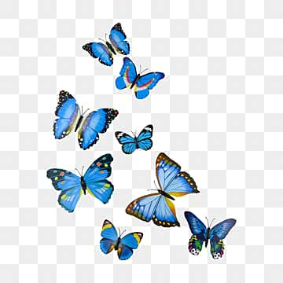

Informations
Responsable : Sylvie DARRACQ
Activité(s): Association d'accompagnement à la personne mourante
Localisation
Nous sommes situés à Pontonx

Contact
Mobile: 06 40 64 94 28
Web
Description
L'association O Coeur de la vie est née d'un constat simple :
la mort fait encore trop souvent silence, alors qu'elle concerne tout un chacun
- Personnes en deuil
- Aidants
- Soignants, accompagnants
- Professionnels du funéraire
- Collectivités, associations et institutions locales
Nos actions sont locales, conviviales et adaptées a différents publics:
- Les maux du silence: espaces d'écoute et de parole autour de la mort et du deuil
- Ciné-débats et conférence: pour faire évoluer les partenariats avec les aidants, soignants et collectivités